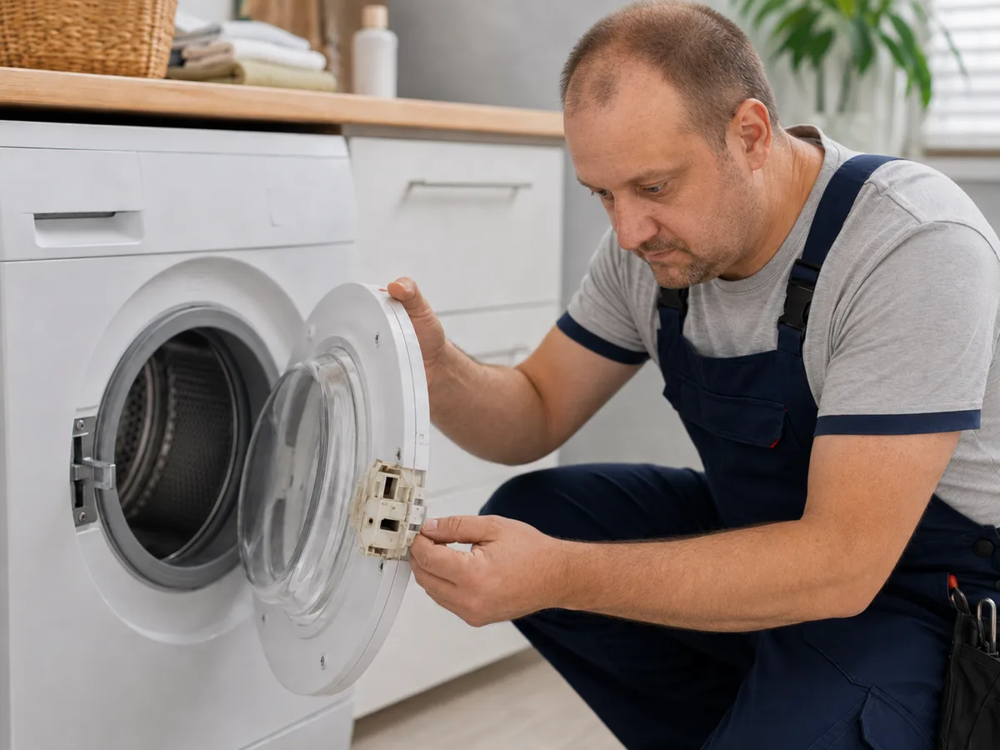
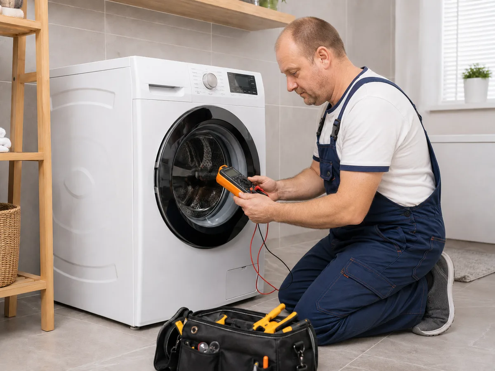
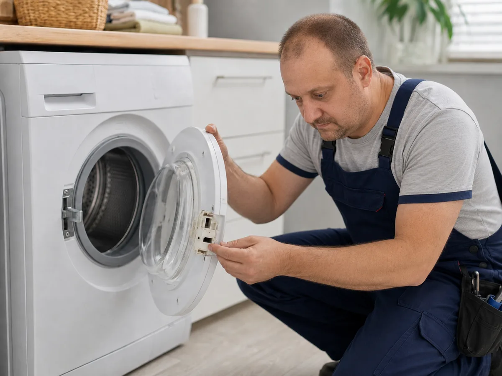
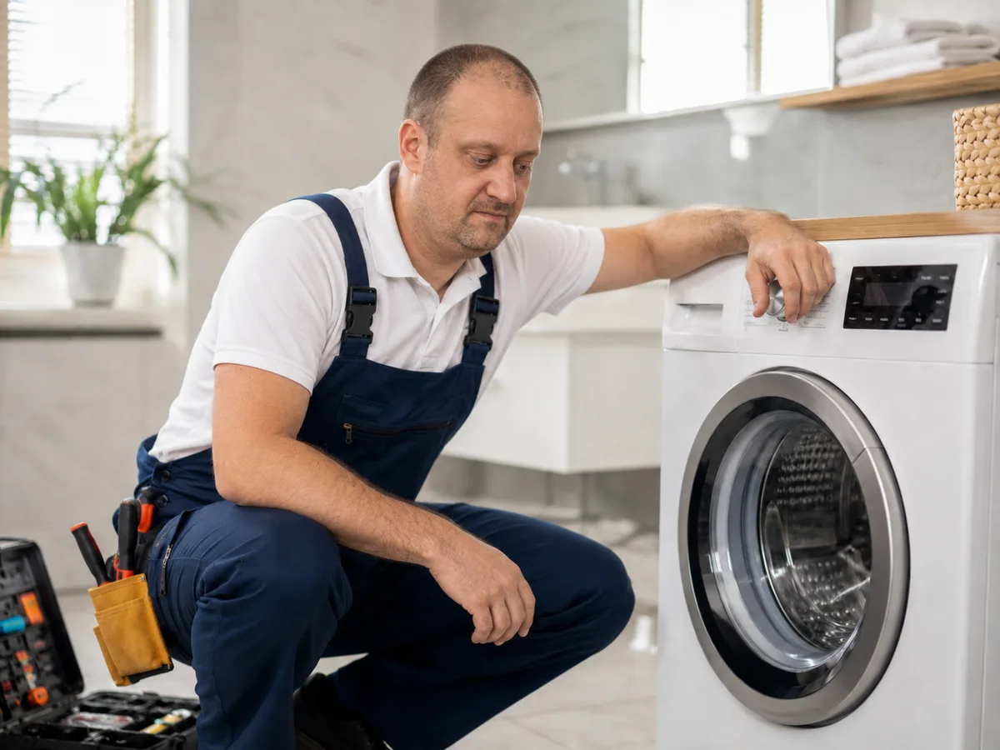
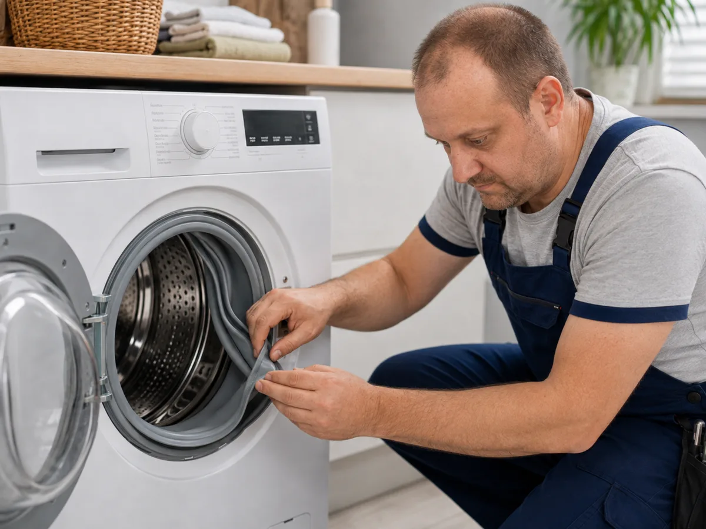
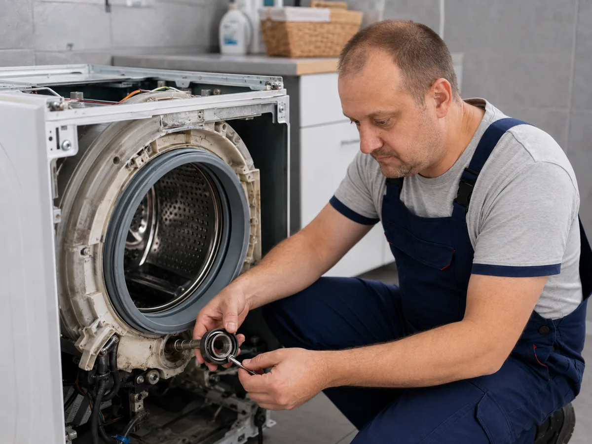
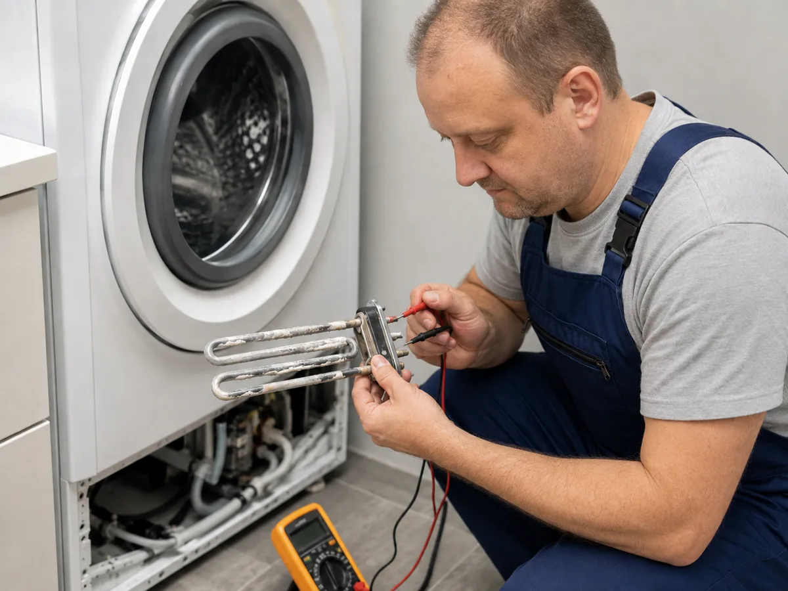
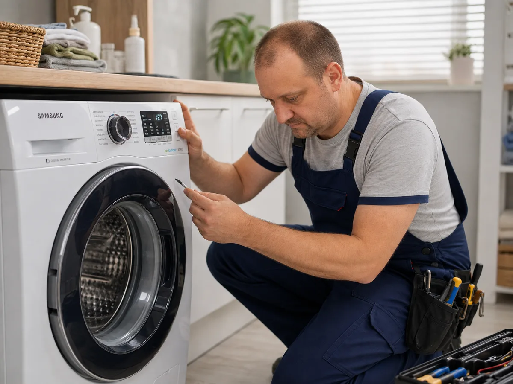
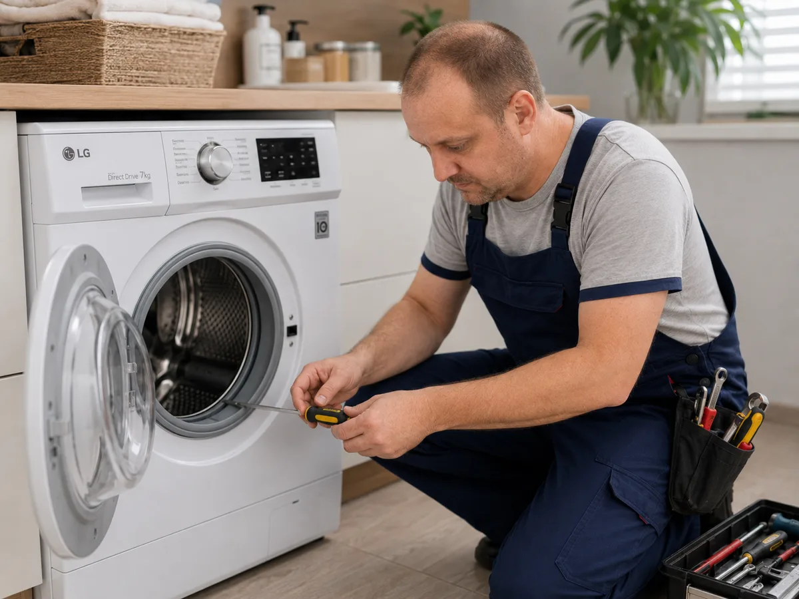
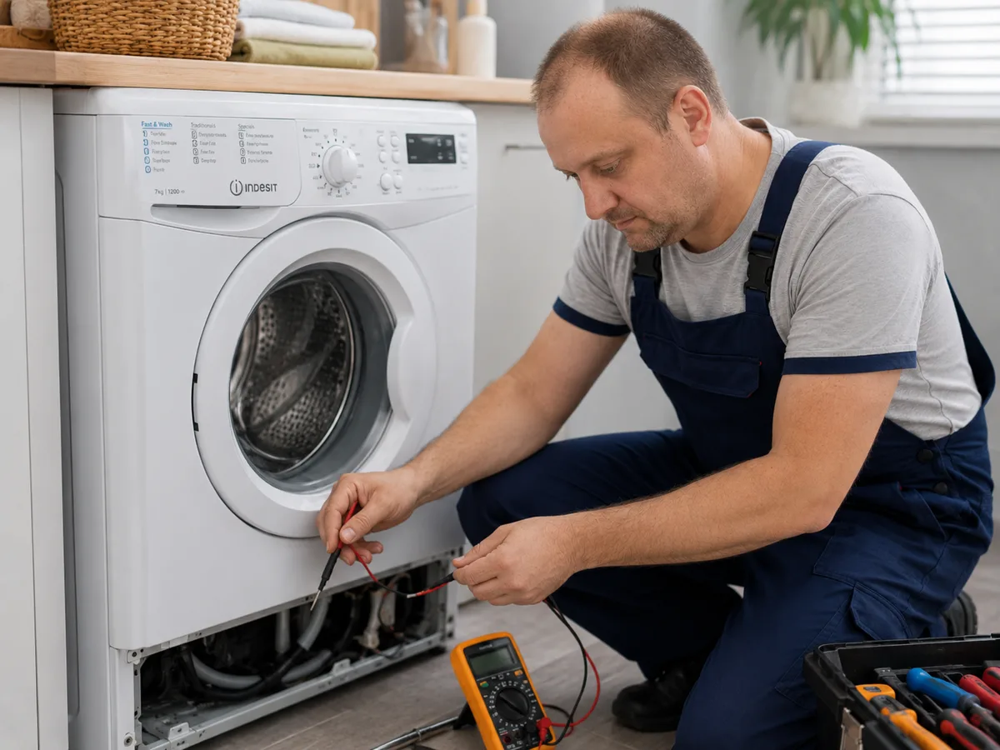

Ремонт пральних машин у Харкові та області вдома
Викликайте майстра з ремонту пральних машин у Харкові та області. Діагностика, терміновий ремонт, заміна ТЕНа, насоса, замка люка, манжети, ременя, підшипників і модуля керування.
- ✓ Ремонт пральних машин вдома
- ✓ Терміновий виїзд по Харкову та області
- ✓ Ціна погоджується до ремонту
- ✓ Bosch, Samsung, LG, Indesit та інші

Залишити заявку
Введіть телефон — майстер зв’яжеться з вами та уточнить проблему.
Які несправності усуваємо
Майстер може виконати діагностику пральної машини вдома та назвати вартість ремонту до початку робіт.

Не зливає воду
Перевірка фільтра, зливного насоса, шланга, засмічення та системи зливу.

Не гріє воду
Діагностика ТЕНа, датчика температури, проводки та плати керування.

Не віджимає
Перевірка ременя, двигуна, щіток, амортизаторів, датчиків і завантаження.

Тече
Усунення протікання з люка, манжети, патрубків, бака, фільтра або шлангів.

Не відкривається люк
Заміна ручки, петлі, замка люка або пристрою блокування люка.

Шумить і стрибає
Перевірка підшипників, амортизаторів, барабана та противаг.
Популярні ціни на ремонт
Точна вартість залежить від моделі, доступу до деталі та стану пральної машини.
Виклик майстра
700 грн
Заміна ТЕНа
1400–1900 грн
Заміна насоса
1500 грн
Заміна УБЛ
1700 грн
Які деталі найчастіше міняємо
Майстер уточнює модель і симптоми поломки, щоб взяти на виїзд інструмент і поширені запчастини.

ТЕН
Якщо машинка не гріє воду, майстер перевіряє нагрівач, датчик температури та проводку.

Зливний насос
При проблемах зі зливом перевіряється фільтр, помпа, патрубки та зливний шланг.

Замок люка / УБЛ
Якщо люк не блокується або не відкривається, перевіряється замок, ручка та петля люка.

Манжета люка
При протіканні біля дверцят майстер оглядає гумову манжету і місце посадки.

Приводний ремінь
Якщо барабан не обертається або машинка не віджимає, перевіряється ремінь і привід.

Підшипники
При сильному шумі, люфті барабана та вібрації може знадобитися заміна підшипників.
Ремонт пральних машин за брендами
Окремі сторінки під популярні бренди допомагають швидше знайти потрібну послугу.


Як проходить ремонт
Залишаєте заявку
Вказуєте телефон і коротко описуєте проблему.
Майстер зв’язується
Уточнює модель, симптоми поломки та район Харкова та області або область.
Діагностика вдома
Майстер перевіряє техніку та погоджує вартість ремонту.
Ремонт
Після погодження виконується ремонт або заміна деталі.
Перевірка
Пральна машина запускається та перевіряється після ремонту.
Рекомендації
Майстер пояснює, як уникнути повторної поломки.
Потрібно терміново викликати майстра?
Залиште заявку — майстер зв’яжеться з вами та підкаже можливу причину поломки.
Швидка заявка
Часті питання
Скільки коштує ремонт пральної машини у Харкові?
Ціна залежить від несправності. Наприклад, заміна ТЕНа коштує 1400–1900 грн, заміна зливного насоса — 1500 грн, заміна УБЛ — 1700 грн.
Чи можна відремонтувати пральну машину вдома?
Так, більшість несправностей усувається вдома без вивезення техніки в майстерню.
Які бренди ремонтуєте?
Bosch, Samsung, LG, Indesit, Electrolux, Zanussi, Whirlpool, Ariston та інші популярні бренди.
Що робити, якщо машина не зливає воду?
Не запускайте віджим багато разів поспіль. Залиште заявку, майстер перевірить фільтр, насос, шланг і систему зливу.